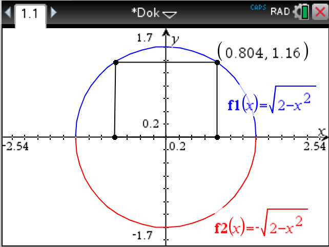
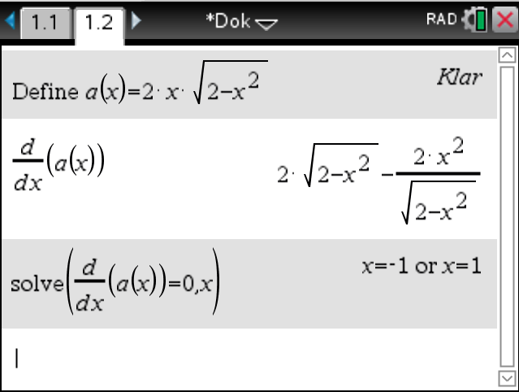
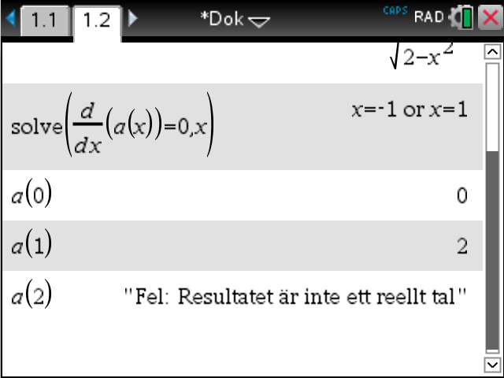
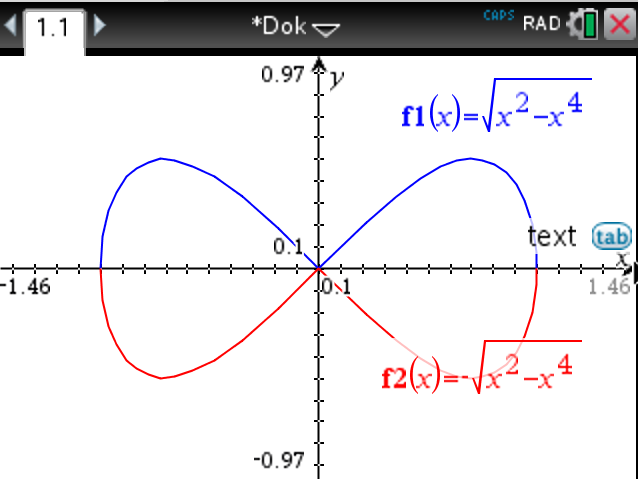
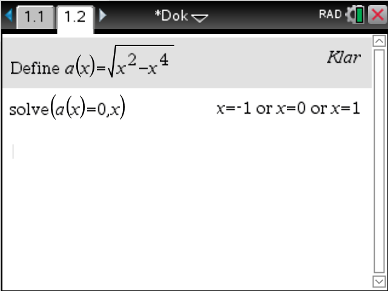
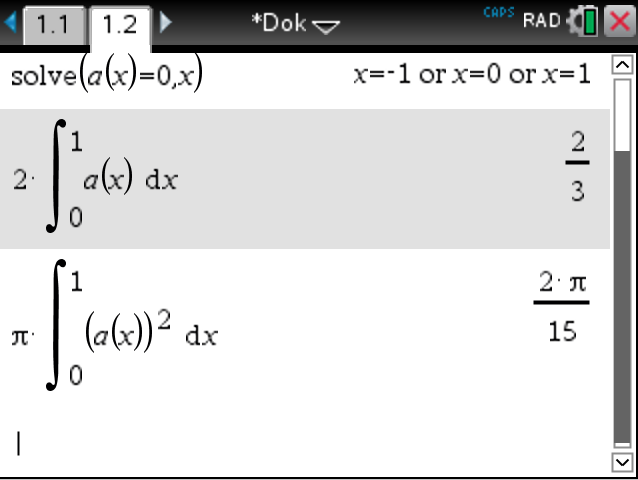

3. Uppgifter med rottermer
Diskutera med din bänkkamrat över följande
- När är en kvadratrot definierad?
- Hur förenklar vi kvadratrötter, tex \( \sqrt{3}\cdot \sqrt{6} \) eller \( 5\sqrt{2} - \sqrt{18} \) ?
- Hur kvadrerar vi kvadratrötter, tex \( (4\sqrt{2})^2 \)?
- Hur deriverar vi en kvadratrot, tex \( D\sqrt{x^2-1} \)?
- Hur integrerar vi en kvadratrot, tex \( \displaystyle\int \sqrt{x^2-1} \mathrm{\,d}x \)?
Inledande uppgifter
- När är en kvadratrot definierad?
Då det vi tar roten av är större än 0.
- När är följande kvadratrötter definierade?
Påstående \( x \geq -2 \) \( x \geq -1 \) \( x \geq 0 \) \( x \geq 1 \) \( x \geq 2 \) \( \sqrt{x} \) \( \sqrt{x+1} \) \( \sqrt{x-1} \) \( \sqrt{x+2} \) \( \sqrt{x-2} \) \( \sqrt{\dfrac{x}{2}} \) \( \sqrt{\dfrac{x}{2}+1} \) \( \sqrt{\dfrac{x}{2}-1} \) Påstående \( x \geq -2 \) \( x \geq -1 \) \( x \geq 0 \) \( x \geq 1 \) \( x \geq 2 \) \( \sqrt{x} \) \( \sqrt{x+1} \) \( \sqrt{x-1} \) \( \sqrt{x+2} \) \( \sqrt{x-2} \) \( \sqrt{\dfrac{x}{2}} \) \( \sqrt{\dfrac{x}{2}+1} \) \( \sqrt{\dfrac{x}{2}-1} \) Kombinera så att uttrycken har samma värde.
Välj av sex följande uttryck: \( \sqrt{2}\cdot \sqrt{5} \), \( \sqrt{2}\cdot \sqrt{8} \), \( \sqrt{3}\cdot \sqrt{5} \), \( \sqrt{3} \cdot \sqrt{6} \), \( \sqrt{8} \) och \( \sqrt{12} \)
\( 2\sqrt{2} \) \( 3\sqrt{2} \) \( \sqrt{10} \) \( 4 \) \( \sqrt{15} \) \( 2\sqrt{3} \) \( \sqrt{8} \) \( 2\sqrt{2} \) \( \sqrt{3} \cdot \sqrt{6} \) \( 3\sqrt{2} \) \( \sqrt{2}\cdot \sqrt{5} \) \( \sqrt{10} \) \( \sqrt{2}\cdot \sqrt{8} \) \( 4 \) \( \sqrt{3}\cdot \sqrt{5} \) \( \sqrt{15} \) \( \sqrt{12} \) \( 2\sqrt{3} \) Kombinera rätt kvadrering med rätt värde.
Välj bland följande uttryck: \( (\sqrt{2})^2 \), \( (\sqrt{3})^2 \), \( (2\sqrt{2})^2 \), \( (2\sqrt{3})^2 \), \( (3\sqrt{2})^2 \) och \( (4\sqrt{2})^2 \).
32 8 18 2 3 12 \( (4\sqrt{2})^2 \) 32 \( (2\sqrt{2})^2 \) 8 \( (3\sqrt{2})^2 \) 18 \( (\sqrt{2})^2 \) 2 \( (\sqrt{3})^2 \) 3 \( (2\sqrt{3})^2 \) 12 - Bestäm följande derivator
- \( D \sqrt{x} \)
\( D \sqrt{x} = D x^{\frac{1}{2}} = \dfrac{1}{2}x^{\frac{1}{2}-1} = \dfrac{1}{2}x^{-\dfrac{1}{2}} = \dfrac{1}{2\sqrt{x}} \)
- \( D\sqrt{x^2-1} \)
\( D \sqrt{x^2-1} = D (x^2-1)^{\frac{1}{2}} = \dfrac{1}{2}(x^2-1)^{-\dfrac{1}{2}} \cdot 2x= \dfrac{x}{\sqrt{x^2-1}} \)
- \( D\sqrt{x^2+x} \)
\( D\sqrt{x^2+x} = D(x^2+x)^{\frac{1}{2}} = \dfrac{1}{2}(x^2+x)^{-\dfrac{1}{2}}\cdot(2x+1) = \dfrac{2x+1}{2\sqrt{x^2+x}} \)
- \( D \sqrt{x} \)
- Bestäm följande integraler
- \( \displaystyle\int \sqrt{x} \mathrm{\,d}x \)
\( \displaystyle\int \sqrt{x} \mathrm{\,d}x = \displaystyle\int x^{\frac{1}{2}} \mathrm{\,d}x = \dfrac{1}{1+\dfrac{1}{2}}x^{1+\dfrac{1}{2}} + C= \dfrac{1}{\dfrac{3}{2}}x^{\frac{3}{2}}+C = \dfrac{2x\sqrt{x}}{3}+C \)
- \( \displaystyle\int \sqrt{x+1}\mathrm{\,d}x \)
\( \displaystyle\int \sqrt{x+1}\mathrm{\,d}x = \displaystyle\int (x+1)^{\frac{1}{2}} = \dfrac{1}{\dfrac{3}{2}}(x+1)^{\frac{3}{2}}+C = \dfrac{2(x+1)\sqrt{x+1}}{3}+C \)
Eftersom den inre funktionens, \( x+1 \), derivata är \( 1 \) behöver vi inte beakta den.
- \( \displaystyle\int x\sqrt{x^2+1} \mathrm{\,d}x \)
\( \displaystyle\int x\sqrt{x^2+1} \mathrm{\,d}x = \displaystyle\int x(x^2+1)^{\frac{1}{2}}\mathrm{\,d}x = \dfrac{1}{2}\displaystyle\int 2x(x^2+1)^{\frac{1}{2}} \mathrm{\,d}x = \dfrac{1}{2}\cdot\dfrac{1}{\dfrac{3}{2}}(x^2+1)^{\frac{3}{2}}+C = \dfrac{1}{3}(x^2+1)\sqrt{x^2+1}+C \)
- \( \displaystyle\int \sqrt{x} \mathrm{\,d}x \)
- Derivera funktionen \( f(x) = 2\sqrt{x} + \dfrac{3}{x^2} - 4 \). [V06, 2a)]
\( f(x) = 2\sqrt{x} + \dfrac{3}{x^2} - 4 = 2 x^{\frac{1}{2}} + 3 x^{-2} \).
\( f'(x)=x^{-\dfrac{1}{2}}-6x^{-3} (= \dfrac{1}{\sqrt{x}} + \dfrac{6}{x^3}) \)
- Lös ekvationen \( \sqrt{x-2} = 1+ \dfrac{2}{\sqrt{x-2}} \). [H00, 2]
\( \begin{array}{rcll} \sqrt{x-2} & = & 1+ \dfrac{2}{\sqrt{x-2}} & \mid \sqrt{x-2}\\ (\sqrt{x-2})^2 & = & \sqrt{x-2} + \sqrt{x-2}\cdot \dfrac{2}{\sqrt{x-2}} \\ x-2 & = & \sqrt{x-2} +2 \\ x-4 & = & \sqrt{x-2} & \mid (\quad)^2 \\ x^2-8x+16 & = & x-2 \\ x^2-9x +18 & = & 0\\ x & = & \dfrac{9\pm \sqrt{(-9)^2-4\cdot 1 \cdot 18}}{2\cdot 1} \\ x & = & \dfrac{9\pm3}{2} \end{array} \)
Vi får rötterna \( x=3 \) och \( x=6 \).
Kontroll ger att \( x=6 \).
- Bestäm de reella rötterna till ekvationen \( \sqrt{2-x} = x+2 \). [H08, 7]
\( \begin{array}{rcll} \sqrt{2-x} & = & x+2 & \mid (\quad)^2 \\ 2-x & = & (x+2)^2 \\ 2-x & = & x^2+4x+4 \\ x^2 +5x -2 & = & 0 \\ \text{Rotformeln ger} \\ x & = & \dfrac{-5\pm\sqrt{17}}{2} \\ \end{array} \)
Eftersom vi har kvadrerat måste rötterna vara positiva, alltså \( x=\dfrac{-5+\sqrt{17}}{2} \).
- Visa att värdena av uttrycken \( x^2 +1 + \sqrt{x^4+2x^2} \) och \( x^2+1 -\sqrt{x^4 + 2x^2} \) är varandras inverterade tal för alla värden på \( x \). [V88, 2]
Om \( x \) och \( y \) är varandras inverterade tal gäller att \( x\cdot y =1 \).
\( \begin{array}{rcl} x \cdot y & = & (x^2+1+\sqrt{x^4+2x^2}) (x^2+1-\sqrt{x^4+2x^2}) \\ & = & (x^2+1)^2-(\sqrt{x^4 + 2x^2})^2\\ & = & x^4 + 2x^2 +1 -x^4-2x^2 \\ & = & 1\\ \end{array} \)
- Beräkna arean av det område som begränsas av de räta linjerna \( x=0, x=2, y=0 \) och kurvan \( y=\dfrac{3x}{\sqrt{2x^2+1}} \). [V84, 6]
Vi skall bestämma \( A = \displaystyle\int_0^2 \dfrac{3x}{\sqrt{2x^2+1}} \mathrm{\,d}x = 3 \).
- Bestäm funktionens \( f(x)=x+\sqrt{9-x^2}, -3\leq x \leq 3 \) största och minsta värde. Rita funktionens graf. [V08, 9]
\( f(x)= x+\sqrt{9-x^2} = x+(9-x^2)^{\frac{1}{2}} \).
\( f'(x)=1 -2x\cdot \dfrac{1}{2}(9-x^2)^{-\dfrac{1}{2}} = 1-\dfrac{x}{\sqrt{9-x^2}} \).
Söker nollstället, \( f'(x)=0 \), alltså
\( \begin{array}{rcll} 1-\dfrac{x}{\sqrt{9-x^2}} & = & 0 \\ \\ \dfrac{x}{\sqrt{9-x^2}} & = & 1 \\ \\ \sqrt{9-x^2} & = & x & \mid (\quad)^2\\ 9-x^2 & = & x^2 \\ 2x^2 & = & 9 \\ x^2 & = & \dfrac{9}{2} & \mid{\sqrt{\quad}} \\ x & = & \pm \dfrac{3}{\sqrt{2}}\\ \end{array} \)
Roten är $x=\dfrac{3}{\sqrt{2}}.
Största och minsta värdet får vi i derivatans nollställe eller i intervallets ändpunkter.
\( \begin{array}{rcl} f(-3) & = & -3 +\sqrt{9-(-3)^2} = -3\\ \\ f(\dfrac{3}{\sqrt{2}}) & = & \dfrac{3}{\sqrt{2}} +\sqrt{9-(\dfrac{3}{\sqrt{2}})^2} = \dfrac{3}{\sqrt{2}} +\sqrt{9-\dfrac{9}{2}} = \dfrac{3}{\sqrt{2}} +\sqrt{\dfrac{18-9}{2}} = \dfrac{3}{\sqrt{2}} + \dfrac{3}{\sqrt{2}} = 3\sqrt{2}\\ \\ f(3) & = & 3 +\sqrt{9-3^2} = 3\\ \end{array} \)
Största värdet är \( 3\sqrt{2} \) och minsta värdet är \( -3 \).
Utan räknare
Exempel 1 Visa utan användning av närmevärden att \( x \) och \( y \) är inverterade tal om \( x=\sqrt{5-2\sqrt{6}} \) och \( y=\sqrt{2\sqrt{6}+5} \).
Lösning
Om \( x \) och \( y \) är inverterade tal gäller att \( x \cdot y = 1 \). Alltså
\( \begin{array}{l} \sqrt{5-2\sqrt{6}} \cdot \sqrt{2\sqrt{6}+5} \\ = \sqrt{(5-2\sqrt{6})(2\sqrt{6}+5)} \\ = \sqrt{10\sqrt{6}+25-4\sqrt{36}-10\sqrt{6}} \\ = \sqrt{25-4\cdot6} \\ = \sqrt{25-24} \\ = \sqrt{1} = 1 \\ \end{array} \)
Alltså: \( x \) och \( y \) är varandras inverterade tal.
Exempel 2 Visa utan att använda närmevärden att \( \sqrt{85-60\sqrt{2}}=3\sqrt{5}-2\sqrt{10} \).
Lösning
För en kvadratrot gäller \( \sqrt{a} = b \Leftrightarrow b^2=a \) och \( a,b \geq 0 \). Vi betecknar \( a=85-60\sqrt{2} \) och \( b=3\sqrt{5}-2\sqrt{10} \). \( b=3\sqrt{5}-2\sqrt{10} \geq 0 \) så vi börjar räkna.
\( b^2 = (3\sqrt{5}-2\sqrt{10})^2 = 9\cdot 5 -12\sqrt{50}+4\cdot 10 = 85 -12\cdot5\sqrt{2} = 85-60\sqrt{2} = a \).
Alltså \( \sqrt{85-60\sqrt{2}}=3\sqrt{5}-2\sqrt{10} \).
Exempel 3 Lös olikheten \( \mid x-1 \mid - \sqrt{x+1} > 0 \).
Lösning
Kvadratroten ger att \( x+1\geq 0 \Leftrightarrow x\geq -1 \).
\( \begin{array}{rrcll} & \mid x-1 \mid - \sqrt{x+1} & > & 0 & \\ & \mid x-1 \mid & > & \sqrt{x+1} & \mid ()^2 \textrm{eftersom bägge led positiva} \\ & (x-1)^2 & > & x+1 & \\ & x^2-2x+1 & > & x+1 & \\ & x^2 -3x & > & 0 & \\ \textrm{Löser ekvation: } & x^2-3x & = & 0 & \\ & x(x-3) & = & 0 & \\ \textrm{Alltså } & x=0 & \textrm{eller} & x-3=0 \\ & & & x=3 \\ \end{array} \)
Vi har en parabel som öppnar sig uppåt med nollställena 0 och 3.

Och när vi jämför med när roten är definierad får vi svaret \( -1\leq x \leq 0 \) eller \( x\geq 3 \).
Exempel 4 Lös ekvationen \( x-\sqrt{43-3x}=11 \).
Lösning
Roten är definierad då \( 43-3x \geq 0 \Leftrightarrow x \leq \dfrac{43}{3} = 14\dfrac{1}{3} \).
\( \begin{array}{rrcll} & x-\sqrt{43-3x} & = & 11 & \\ & -\sqrt{43-3x} & = & 11-x & \mid (\quad)^2 \text{ då } x-11 \geq 0 \Leftrightarrow x \geq 11 \\ & 43-3x & = & 121-22x+x^2 & \\ & x^2-19x +78 & = & 0 & \\ & x & = & \dfrac{19\pm \sqrt{(-19)^2-4\cdot 1\cdot 78}}{2\cdot 1} & \\ & & = & \dfrac{19\pm\sqrt{49}}{2}=\dfrac{19\pm 7}{2} & \\ \end{array} \)
Rötterna är \( x=\dfrac{19-7}{2}=6 \) och \( x=\dfrac{19+7}{2}=13 \).
Alltså \( x= 13 \).
Med räknare
Exempel 1 Bestäm största och minsta värdet för uttrycket \( 2x-\sqrt{1-x^2} \) [V92, 7]
Lösning
TI nSpire CAS
Vi definierar funktionen på räknaren, define f(x)=2x- sqrt(1-x^2).
Funktionen är definierad då \( 1-x^2 \geq 0 \Leftrightarrow -1\leq x \leq 1 \). På räknaren solve()
Derivera funktionen och spara derivatafunktionen som \( g(x) \), define g(x)=\( \dfrac{d}{dx} f(x) \).
Bestäm nollställena för derivatan, solve(g(x)=0,x). Nollstället är \( x=\dfrac{-2\sqrt{5}}{5} \).
Funktionen får sitt största och minsta värde i derivatans nollställe eller i intervallets ändpunkter.
\( f(-1)= -2 \)
\( f(\dfrac{-2\sqrt{5}}{5}) = -\sqrt{5} \approx -2,24 \).
\( f(1)=2 \)
Minsta värdet är \( -\sqrt{5} \) och största värdet 2.
Exempel 2 En rektangel har en sida på x-axeln och två hörn på cirkeln \( x^2+y^2=2 \) ovanför \( x \)-axeln. Bestäm rektangelns största möjliga area.
Lösning
TI nSpire CAS
För att rita funktionerna på räknaren löser vi \( x^2 + y^2 =2 \) som \( y = \pm\sqrt{2-x^2} \). Övre delen av cirkeln får vi genom att rita \( y=\sqrt{2-x^2} \) och cirkelns nedre del genom att rita \( y=-\sqrt{2-x^2} \).

Rektangelns \( x \) koordinat är \( x \). \( y \)-koordinaten är \( \sqrt{2-x^2} \). \( x \) rör sig mellan \( 0 \) och \( 2 \).
Arean för kvadraten är \( A(x)=2x \cdot \sqrt{2-x^2} \). Vi definierar den via define kommandot.
Vi bestämmer derivatan och derivatans nollställen.

Derivatans nollställe i intervallet \( [0,2] \) är \( x=1 \).
Vi hittar största och minsta värde i derivatans nollställe eller i intervallets ändpunkter.

Största möjliga arean är 2.
Exempel 3 Kurvan \( y^2=x^2-x^4, x\geq 0 \) begränsar ett slutet område. Beräkna områdets area. Beräkna ytterligare volymen av den rotationskropp som uppstår, då området roterar kring \( x \)-axeln.
Lösning
Ti nSpire CAS
Vi skriver kurvan som \( y = \pm \sqrt{x^2-x^4} \) och plottar in bägge leden.

Vi behöver skärningspunkterna. För att räkna dem definierar vi funktionen. Vi tar endast den övre eftersom figuren är symmetrisk.

Våra intressanta nollställen är \( x=0 \) och \( x=1 \).
Arean får vi som \( \dfrac{2}{3} \). Volymen som \( \dfrac{2\pi}{15} \).
